3 mots pour qualifer cet appartement:
L’immeuble a été livré mi septembre. Il reste deux appartements à vendre.
Deux T3 de 71 m2, même configuration (cf annonce le bon coin). Celui au 2ème étage coûte 275000 euros, l’autre au 4ème et dernier étage coûte 283000 euros.
3 appartements par étage. Pas de vis à vis côté jardin (pour le moment). Charges de copro: 900 euros/ans.
Les appartements sont livrés sans cuisine. Chauffe-eau au gaz pour chauffer l’eau:
Il est prévu une facture de gaz de 150 euros par an. Les performances du bâtiment sont vraiment intéressantes.
L’architecture l’est moins. Blanc à l’extérieur.
De côté.
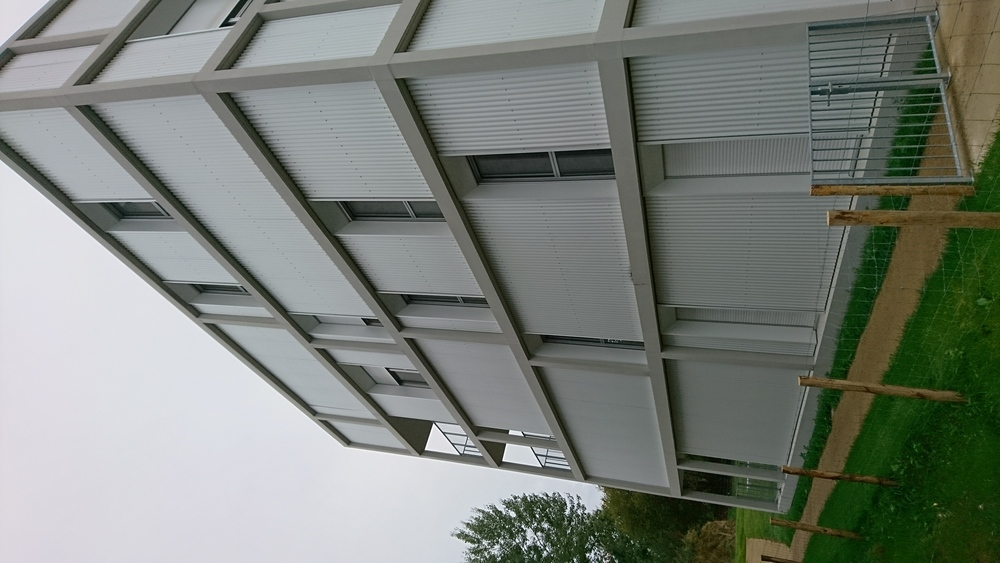
Sur la façade.
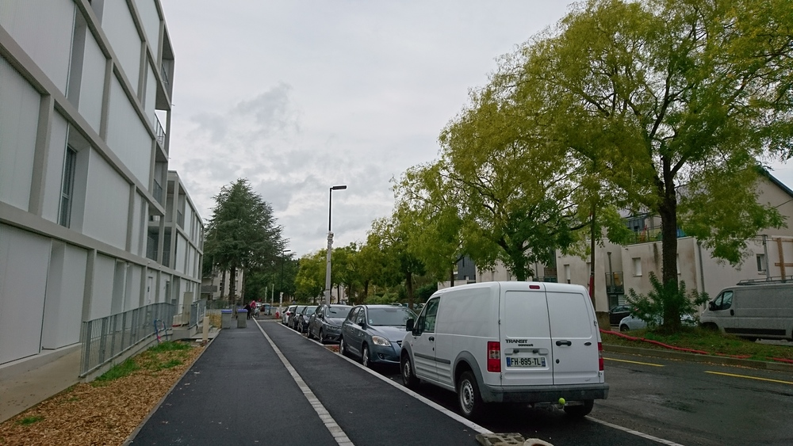
De derrière.
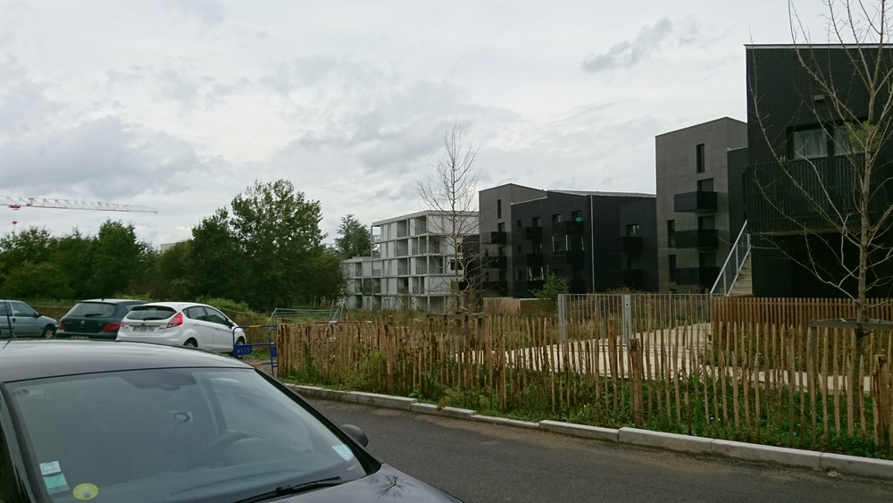
Dixit le commercial: comme c’est tôlé à l’extérieur, les ravalements se feront au karcher (sous entendu pas cher et rapido).
Blanc à l’intérieur et marron.
Le C6 (station embellie) est à 2 minutes à pied, le T1 (station Halvèque) à 10 minutes. Le bus 95 est à deux minutes également.
Boulangerie, magasin bio, super U express, docteurs, pharmacie à moins de 10 minutes à pied. Paridis proche également.
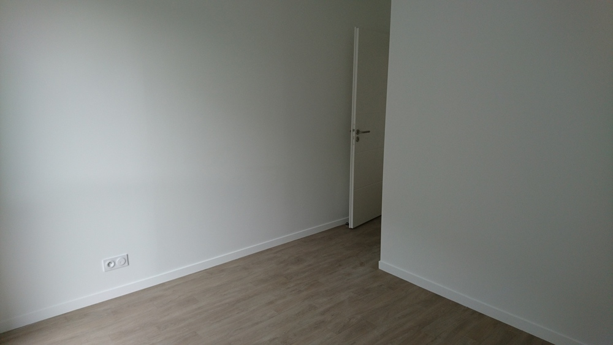
Stratifié marron dans le couloir d’entrée et dans le séjour. Revêtement PVC marronasse dans les chambres et la salle de bain.
Les murs sont blancs, revêtement PVC.
Le petit “plus” mesquin. Regardez la largeur du placard. C’est à cause des normes PMR, paraît il. Selon le commercial, ils en font moins sur certains postes pour que les personnes aménagent selon leur capacité, leur moyens.
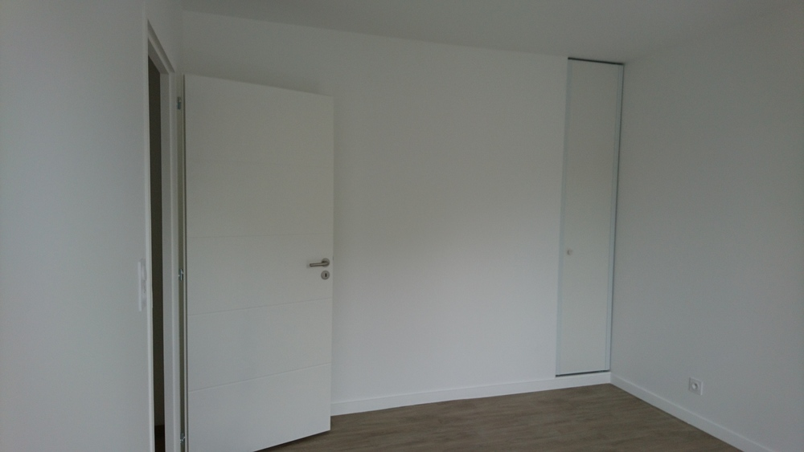
12m2, mazette. Doté d’un cellier tôlé blanc, d’une taille qui force le respect. très très pratique, je dois dire. Prise électrique étanche, robinet (pour le jardin :) ). pratique vous dis-je.
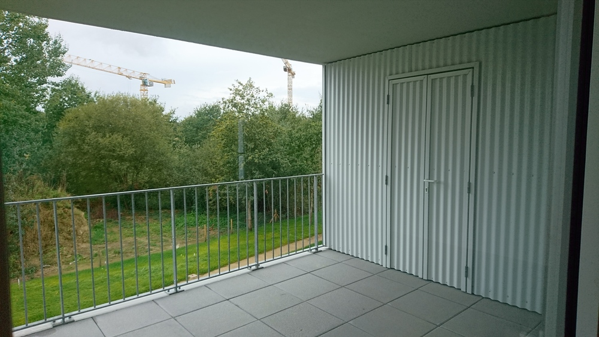
Le balcon du 4ème étage est doté d’un pare-vent sur le côté qui accentue le côté “je suis seul au monde sur mon balcon”. Au dernier étage on voit le stade de la Beaujoire. On doit l’entendre également.
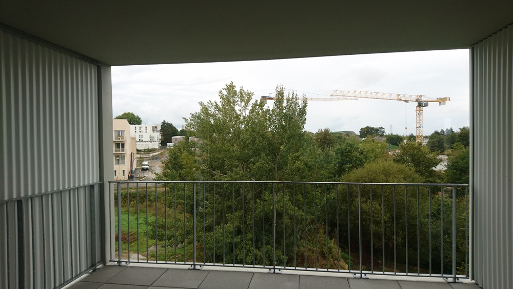
Spacieuse et pratique, manque de rangement.
Blanche et marron dans le ton.
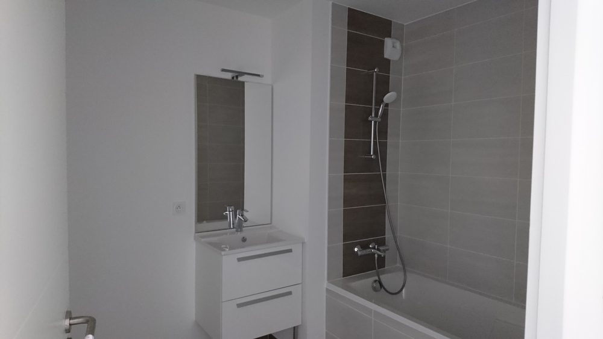
Pas de cuisine livrée, mais un linéaire de 5m. y a de quoi faire :D.
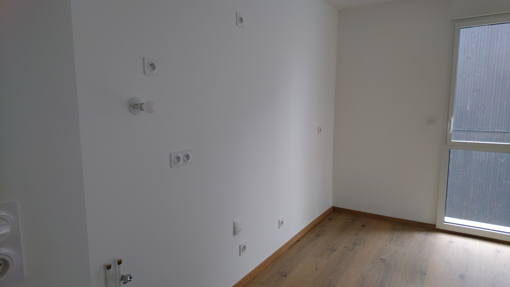 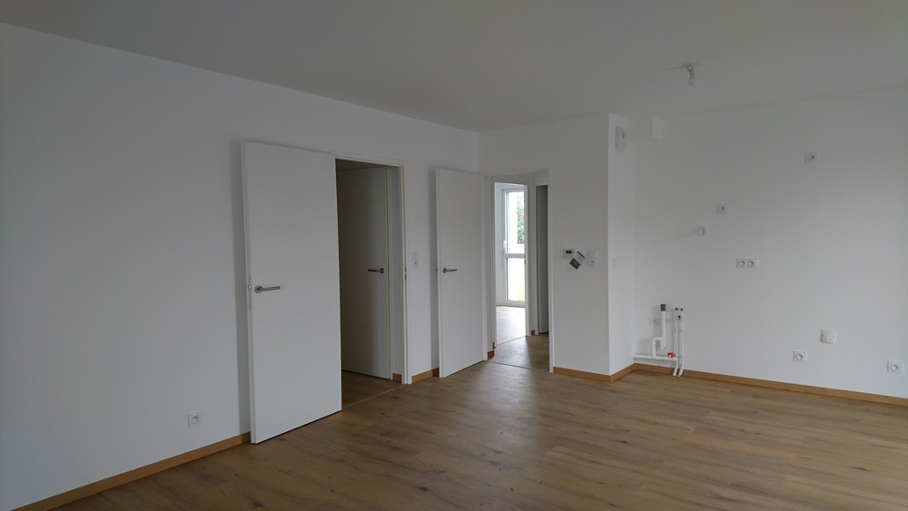 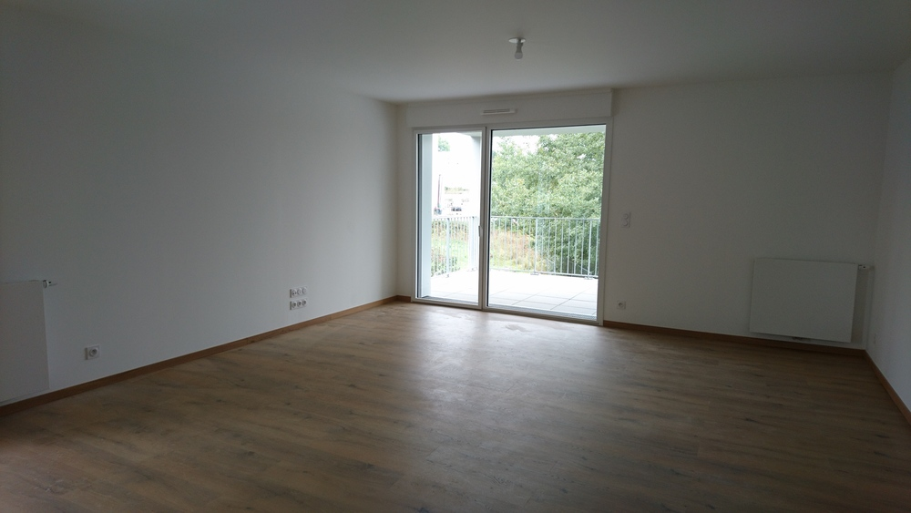
2 places de parking voiture dont une prévue pour accès PMR de 17m2!! De quoi garer 3 twingos en travers. Carrément grandiose.
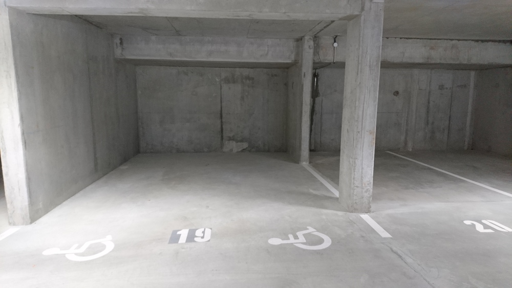
Le local à vélo est à la hauteur…
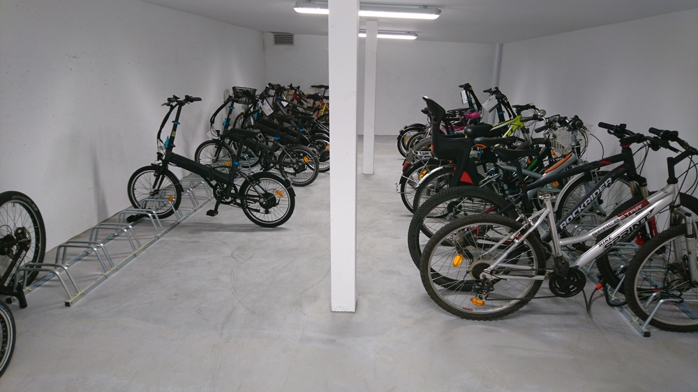
Les 14 premiers propriétaires se sont vus offrir un vélo électrique Décathlon. Cela explique qu’il y en ait autant dans le garage.